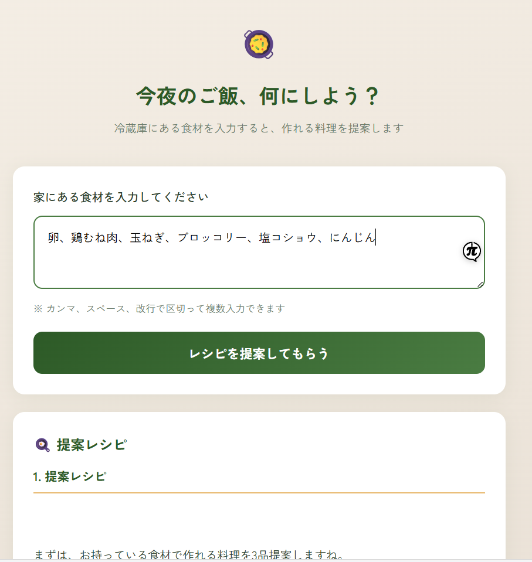

Tonight's Meal AI
家にある食材を入力すると、AIが作れる料理・レシピ・PFCバランスを提案するWebツールです。

トレーニー・一般ユーザーが「今夜何を作るか」「たんぱく質は足りているか」を毎日悩み、買い物や献立の手間が続かない。
食材リストを入力すると、AI（Groq または OpenAI）が3〜5品のレシピ、作り方、1人分のPFC・カロリー目安、追加で買うと良い食材を返すWebアプリを開発。VercelのサーバーレスAPI（api/suggest.js）でデプロイ可能な構成にしました。
ボディメイク指導で重視する「食事の具体化」を、AIで手軽に提案できる形に落とし込めました。フィットネス以外の日常課題にも、同じAPI設計で展開できると実感しています。